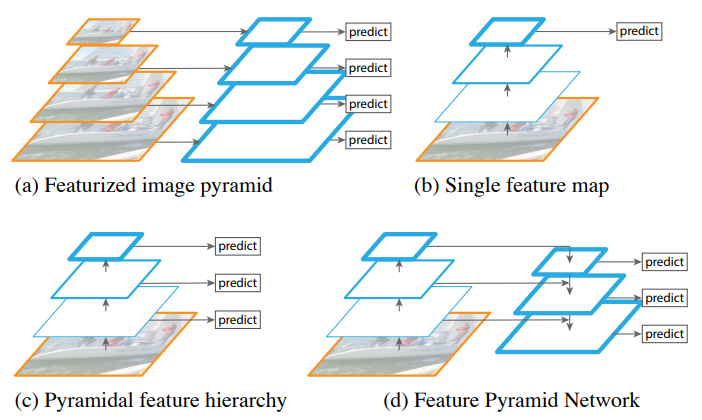
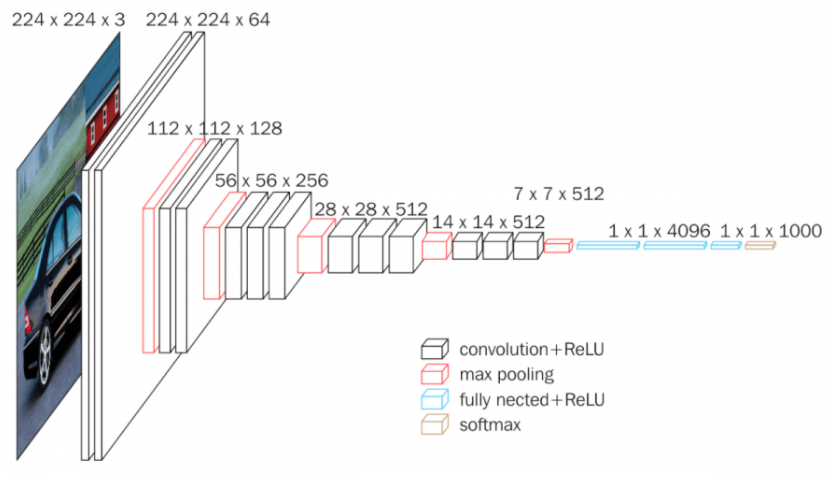
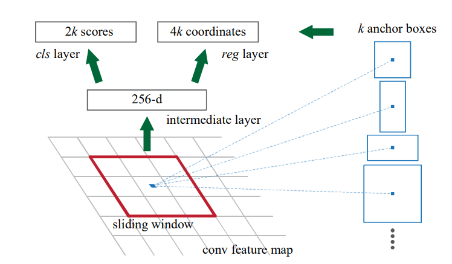
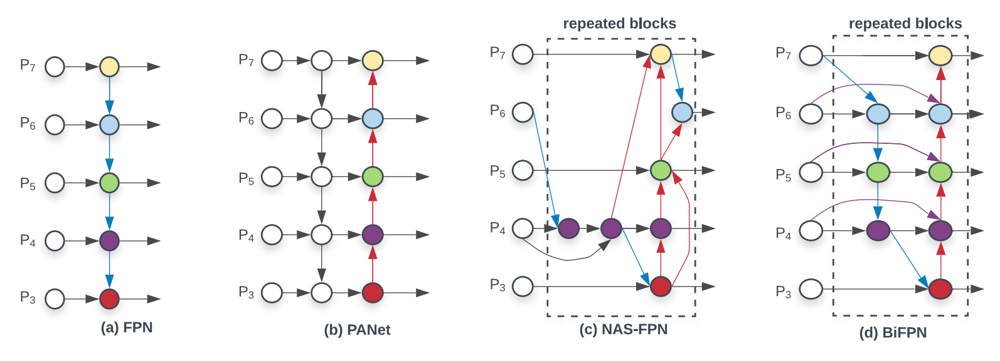
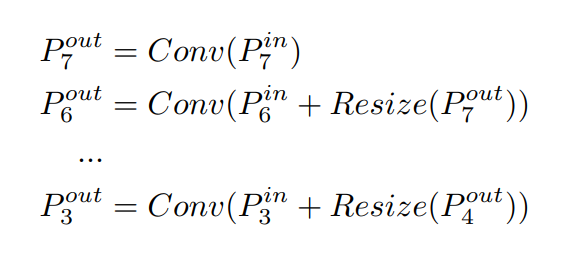

First of all, a very happy new year to you! I really hope that 2021 turns out to be a lot better than 2020 for all of us. 2020 was the first year when I started working as an Applied AI Scientist in the Medical field - my first ever deep learning job! In 2021 I hope to build upon this platform and introduce many more key research papers in a simple and easy to grasp manner. This blog post is the first of many more blogposts to be released this year.
Today, we will be looking at the EfficientDet: Scalable and Efficient Object Detection research paper. With single-model and single-scale, EfficientDet-D7 was able to achieve SOTA results at the time of release of the paper. Even after a year later, at the time of writing, the results are still in the top-5 positions on the COCO leaderboard. Also, recently, in the NFL 1st and Future - Impact Detection Kaggle competition, EfficientDets figured in almost all of the top winning solutions. So, in this blog post we will be uncovering all the magic that leads to such tremendous success for EfficientDets.
Also, while multiple blog posts previously exist on EfficientDets [1, 2, 3..], there isn’t one that explains how to implement EfficientDets in code. In a later blog post that follows this one, I will explain how to implement EfficientDets in PyTorch. The implementation would be directly copied from Ross Wightman’s excellent repo efficientdet-pytorch and the code from the repo used as reference to explain how to implement EfficientDets in PyTorch.
But, code comes later. First, let’s understand the novel contributions of the EfficientDet paper.
1 Structure
The blog post is structured in the following way:
- TOC {:toc}
First, we take a step back and understand multi-scale feature fusion before the introduction of Feature Pyramid Networks. Next, understand the key advancements introduced by FPNs. Next, we look at the various adaptations of FPN such as PANet, NAS-FPN and finally look into BiFPN that was introduced in the EfficientDet paper.
Having looked at BiFPN in great detail, we then finally look into the EfficientDet Architecture and understand how the authors used BiFPN + Compound Scaling to get SOTA results.
2 Prerequisites
I assume that the reader has some knowledge about Object Detection. If you are completely new to the field or simply want to apply EfficientDets to an object detection problem, there are plenty examples on Kaggle that show how to use EfficientDets. This post is more meant for those who want to understand what’s inside an EfficientDet.
Also, here is a great video of the fastai 2018 course by Jeremy Howard that introduces object detection. I started here too about a year ago. :)
Also, since it would be an overkill to put EfficientNets as a prerequisite, I will just say that it would be great if the reader has a good enough understanding of EfficientNets. If you want a refresher, please refer to this blog post that explains EfficientNets in detail step-by-step.
3 Contributions
There are two main contributions from the paper: 1. A new version of a Feature Pyramid Network called BiFPN. 2. And two, Compund Scaling.
While the idea of compound scaling was first introduced in the EfficientNet paper, the authors apply it to object detection and achieve SOTA results. Also, that the authors of the EfficientDet research paper are the same authors who introduced EfficientNets. We won’t be looking into Compound Scaling in this blog post as it has already been explained in my previous blog post here.
We will be looking at what the BiFPN network is in a lot more detail at a later stage. To understand what a BiFPN is, one must first look into what a FPN (Feature Pyramid Network) is.
4 Introduction
This paper starts out with a similar introduction as EfficientNets where the authors explain why model efficiency becomes increasingly important for object detection. From the paper: > Tremendous progresses have been made in recent years towards more accurate object detection. meanwhile, state-of-the-art object detectors also become increasingly more expensive. For example, the latest AmoebaNet-based NASFPN detector requires 167M parameters and 3045B FLOPs (30x more than RetinaNet) to achieve state-ofthe-art accuracy. The large model sizes and expensive computation costs deter their deployment in many real-world applications such as robotics and self-driving cars where model size and latency are highly constrained. Given these real-world resource constraints, model efficiency becomes increasingly important for object detection.
The key question that this paper tries to solve is “Is it possible to build a scalable detection architecture with both higher accuracy and better efficiency across a wide spectrum of resource constraints”?
The authors identified two main challenges when it comes to answering this question: 1. Efficient multi-scale feature fusion 2. And two, Model Scaling
To explain multi-scale feature fusion, we will need to take a step back here and before continuing with the EfficientDet paper, we will have to first look into Feature Pyramid Networks and understand the key idea behind them. But basically, multi-scale feature fusion aims to aggregate features at different resolutions.
So, the next section is merely a summary and introduction to Feature Pyramid Networks. Feel free to skip if you already know what a FPN is.
4.1 Summary: Feature Pyramid Network for Object Detection
He et al were the one of the first to exploit the inherent multi-scale pyramid heirarchy of CNNs and construct feature pyramids and apply to object detection. If this doesn’t make sense right now - it’s okay! I really havent explained in much detail what this means yet. That happens next.
Recognizing objects at vastly different scales is a fundamental challenge in computer vision. Different authors have tried to solve this differently. However, there are three main categories (total four including FPN) of solutions that existed before the introduction of FPN.

4.1.1 Featurized Image Pyramid
This is the first way and possibly the simplest to understand to recognize objects at different scales. Given an input image, resize the image to using different scales, pass the original image and the resized images through a CNN, make a prediction at each scale and simply take the average of these predictions to get a final prediction. Intuitively, this enables a model to detect objects accross a large range of scales by scanning the model over both positions and pyramid levels. Chris Deotte explains this too in simple words here.
But, can you think of the possible problems with this possible solution?
For one, inference time would increase. For each image, we would need to rescale it to various new sizes and then average the predictions. Second, it would also not be possible to do this during train time as this would be infeasible in terms of memory and hardware requirements. Therefore, featurized image pyramid technique can only be used at test time which creates an inconsistency between train/test time inference.
4.1.2 Single Feature Map (Faster RCNN)
Another way is to use the inherent scale invariance property of CNNs. As you know, during the forward pass, a deep CNN computes a feature heirarchy layer by layer, and therefore, has an inherent multi scale pyramidal shape. See VGG-16 network below as an example:

The later layers are much smaller in spatial dimensions compared to the earlier layers. Thus, the scales are different.
Therefore, one could just accept an original image, do a forward pass through a CNN, and get bouding box and class predictions just using this single original scaled image making use of the inherent scale invariance property of CNNs. In fact, this is exactly what was done in the Faster RCNN research paper.

As can be seen in the image above, given an input image, we pass it through a CNN to get a 256-d long intermediate representation of the image. Finally, we use cls layer and reg layer to get classification and bounding box predictions in Faster RCNN method. This has been also explained very well by Jeremy in the video I referenced before.
Can you think of why this might not work? Maybe take a break to think about the possible reasons why this won’t work.
As mentioned by Zeilur and Fergus in Visualizing and Understanding Convolutional Networks research paper, we know that the earlier layers of a CNN have low-level features whereas the deeper layers learn more and thus, have high-level features. The low-level features (understanding) in earlier layers of a CNN harm their representational capacity for object recognition.
4.1.3 Pyramidal Feature Heirarchy (SSD)
A third way could be to first have a stem (backbone) that extracts some meaning from the image and then have another convolutional network head on top to extract the features and perform predictions on each of the extracted features. This way, we do not need to worry about the representational capacity of earlier layers of a CNN. This sort of approach was introduced in the SSD research paper.

As can be seen in the image above, the authors of the research paper used earlier layers of VGG-16 (until Conv5_3 layer) to extract some meaning/representation of the image first. Then, they build another CNN on top of this and get predictions at each step or after each convolution. Infact, the SSD was one of the first attempts at using CNNs pyramidal feature heirarchy as if it were a featurized image pyramid.
But can you think of ways to improve this? Well, to avoid using low-level features from earlier layers in a CNN, SSD instead builts the pyramid starting from high up in the network already (VGG-16) and then adds several new layers. But, while doing this, it misses the opportunity to reuse the earlier layers which are important for detecting small objects as shown in the FPN research paper.
4.1.4 Feature Pyramid Network
So, finally to the Feature Pyramid Network. Having had a look at all the other approaches, now we can appreciate what the FPN paper introduced and why it was such a success. In the FPN paper, a new architecture was introduced that combines the low-resolution, semantically strong features in the later layers with high-resolution, semantically weak features in the earlier layers via a top-down pathway and lateral connections. Thus, leading to Multi-scale feature fusion.
The result is a feaure pyramid that has rich semantics at all levels because the lower semantic features are interconnected to the higher semantics. Somewhat similar idea to a U-Net. Also, since the predictions are generated from a single original image, the FPN network does not compromise on power, speed or memory.
Great, so now if someone woke you up while you were sleeping and asked “what are the main contributions in the Feature Pyramid Network research paper?” You should be able to say: > In a feature pyramid network, the authors used the inherent pyramidal structure and multi-scale property of a CNN and used top-down and lateral connections to connect high semantic layers (later layers of a CNN) with low semantic layers (earlier layers of a CNN) such that a high-level semantic feature maps exists at all scales and thus leading to better multi-scale object detection from a single sized original image.
4.2 BiFPN: Bi-directional Feature Pyramid Network
Now that you know what a FPN is, in this section we will look into one of the main contributions from the EfficientDet research paper and understand what’s a BiFPN. In fact, as mentioned, the authors identified multi-scale feature fusion as one of the key challenges that must be solved to create an Efficient object detector. So how do you achieve that? What are the various ways one could do multi-scale feature fusion?
Well, we just looked at some in the previous section that existed before FPNs were introduced. As you can imagine, FPNs became the default go to network for a while after their introduction for multi-scale feature fusion. Recently, PANet, NAS-FPN and other studies developed more network structures for cross-scale feature fusion.
The EfficientDet research paper has an excellent image on Feature Network Design that shows the various variations below:

4.2.1 FPN
We already know what a FPN is, the above figure is just a different way to show what we have already learnt in the previous section. As we know, FPN introduces top-down and lateral connections to combine multi-scale features. One thing worth mentioning is that while fusing different features, FPNs simply sum them up without disctinction.
Looking at fig-5 (a), we can see that P7out and other output features can be calculated as:

where, Resize is usually a upsampling or downsampling operation for resolution matching, and Conv is usually a convolution operation for feature processing.
4.2.2 PANet
Around 3 years after the FPNs were first introduced, PANet adds ab extra bottom-up path aggregation on top of FPN since the conventional FPN is inherently limited by the one-way information flow. The authors of PANet were able to enhave the feature heirarchy by not only sharing information from top-bottom layers but also by bottom-up path augmentation. Using this simple improvement over FPN, the PANet was able to achieve 1st place of COCO 2017 Challenge Instance Segmention Task and 2nd place in Object Detection Task without large-batch training.
4.2.3 NAS-FPN
More recently, researchers from google brain adopted Neural Architecture Search and aimed to discover a new feature pyramid architecture in a scalable search space covering all cross-scale connections. The discovered architecture, named NAS-FPN, consisted of a combination of top-down and bottom-up connections to fuse features across scales. Although NAS-FPN ahieved better performance, it requires thousands of GPU hours during search, and the resulting feature network as shown in fig-5 (c) is difficult to interpret.
4.2.4 Bi-FPN
Now that we have looked at various ways of multi-scale feature fusion, we are now ready to look into BiFPN. To get BiFPN network, the authors of the EfficientDet paper proposed several optimizations:
- Remove all those nodes that have only one input edge. The intuition is that if a node has only one input edge with no feature fusion, then it will have less contribution to the feature network.
- Add an extra edge from the original input to the output node if they are at the same level in order to fuse more features without adding much cost
- Treat each bidirectional path as one single layer and have multiple of these to enable more high-level feature fusion.
I believe that the optimizations 1,2 would be clear to the reader but perhaps not 3. That’s okay - 3 should become clearer once we look at the EfficientDet Architecture in the next section.
There were also other notable optimizations that were introduced with the introduction of BiFPN such as Weighted Feature Fusion. As mentioned before and as seen in eq-1, when fusing features with different resolutions, a common way is to first resize them to the same resolution and then simply sum them up treating all input features equally without distinction.
However, since different input features are at different resolutions, it is possible that they might contribute differently to the output feature. Thus, the authors introduced an additional weight for each input in Bi-FPN to address this issue and this is referred to as Weighted Feature Fusion. The weights are trained using backward propagation by the network. I won’t cover Fast-normalized fusion in this blog but it is merely a small improvement over Softmax-based fusion to avoid slowdown of GPU hardware by the extra softmax layer.
4.3 Compound Scaling
They key idea of compound scaling has already been introduced here. While previous object detection frameworks relied on bigger backbone networks or larger input image sizes, for higher accuracy, the authors of the EfficientDet paper observed that scaling up feature network and box/class prediction network is also critical when taking into account both accuracy and efficiency,
Thus, by combining EfficientNet backbones with the proposed BiFPN feature fusion, a new family of object detectors EfficientDets were developed which consistently achieve better accuracy with much fewer parameters and FLOPs than previous object detectors.
5 EfficientDet Architecture
As mentioned earlier, the two main contributions of the EfficientDet architecture were: 1. BiFPN 2. Compound Scaling
From the EfficientNet paper, we already know that compound scaling simply refers to scaling up all fimensions such as backbone, input image size, network width and depth at the same time to achieve maximum performance. For more information, refer here.
And we have also already looked at the BiFPN network - thus, we are now ready to cover off the EfficientDet Architecture. We have done all the hard work and not much is left in understanding the EfficientDet Architecture. If you have followed and understood my blog so far, I am sure that you will find the remaining part fairly easy to grasp.

To get the EfficientDet Architecture, the authors simply used the ImageNet pretrained EfficientNet as the backbone network. This backbone extracts features from the Input P1-P7 where Pi represents feature level with resolution of 1/2i of the input image. For instance, if the input resolution is 640x640 then P3in represents feature level with resolution 80x80.
The proposed Bi-FPN accepts the P3-P7 features as input features and repeatedly applies cross-scale multi-scale fusion on these features as shown in fig-6 to get a multi-scale feature representation of the image which is then fed to Class predciction net and Box prediction net to finally get class and bounding box outputs.
This is it really.
6 Conclusion
I hope that today, I was able to help with your understanding of EfficientDets. In case, you haven’t understood something - that’s okay. Please wait for my next blog that explains how to implement the EfficientDet Architecture in PyTorch. By then, every small detail should become crystal clear.
As usual, in case I have missed anything or to provide feedback, please feel free to reach out to me at @amaarora.
Also, feel free to subscribe to my blog here to receive regular updates regarding new blog posts. Thanks for reading!